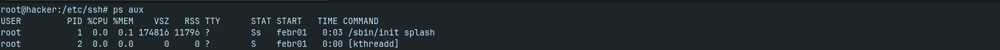

Folyamatok:
1. Folyamatok listázása:
- Aktív folyamatok listázása: A ps aux paranccsal láthatod az összes futó folyamatot a rendszereden, beleértve a felhasználóneveket, a CPU- és memóriahasználatot stb.
- Folyamatok részletes listázása: Ezek az interaktív eszközök folyamatosan frissítik a futó folyamatok listáját, és részletes információkat nyújtanak a rendszer teljesítményéről.
ps aux
Részletes listázáshoz:
apt update -y && apt upgrade -y
apt install htop -y
htop

2. Folyamatok indítása és leállítása:
- Folyamatok indítása: Egy folyamatot háttérben futtatva a command & parancsot használhatod, és ez lehetővé teszi, hogy továbbra is a parancssoron dolgozz, miközben a folyamat fut.
- Folyamatok leállítása: A kill paranccsal tudod leállítani egy folyamatot. A folyamatoknak különböző jelzéseket küldhetsz, például a SIGTERM-et a szokásos leállításhoz vagy a SIGKILL-t az azonnali leállításhoz.
randomCommand &
Folyamatok leállítása:
kill processID
killall processname
3. Folyamatok ellenőrzése:
- Folyamatok figyelése: A watch paranccsal egy parancsot periodikusan lefuttathatsz, így folyamatosan monitorozhatod annak kimenetét.
- Folyamatok erőltetett leállítása (kill -9 processID): A kill -9 paranccsal küldesz egy SIGKILL jelzést, ami azonnali leállítást eredményez.
watch -n 1 command
Erőltetett leállítás:
kill -9 processID
4. Prioritások és erőforrások:
- Folyamatok prioritásának módosítása: A paranccsal változtathatod meg egy futó folyamat prioritását, amely befolyásolhatja a CPU-allokációt.
- Erőforrások korlátozása: A systemd-cgls paranccsal csoportokat (cgroup) hozhatsz létre és kezelhetsz, amelyekkel korlátozhatod a folyamatok erőforrásfelhasználását.
renice
Korlátozások:
systemd-cgls
systemd-cgtop
5. Folyamatok részletes információi:
- A /proc könyvtárban találhatók olyan fájlok, amelyek tartalmazzák a rendszer és a folyamatok aktuális állapotáról szóló információkat. Például a /proc/processID/status fájlban megtalálhatók egy folyamat részletes információi.